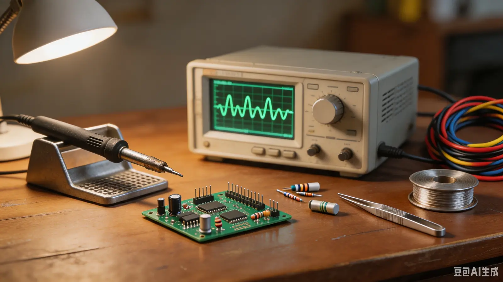

首页 › 组织架构 › 硬件部
硬件部
核心技术实操部门
部门简介
硬件部为科联核心技术实操部门，立足电子工程专业硬件实操特色，主要负责科创硬件技术培训、硬件设备运维、科创作品硬件研发指导、赛事硬件支撑等工作，聚焦硬件实操能力培育与科创硬件项目落地。
主要工作事项
硬件技能培训——面向全院学生常态化开展零基础、进阶式硬件实操培训，主要涵盖电路原理讲解、元器件识别、电路焊接、电路板设计、单片机应用、嵌入式硬件搭建、设备调试等实操课程，针对性补齐学生硬件实操短板，夯实科创硬件基础。
硬件设备管理运维——负责科联各类实验硬件设备、实训器材、活动硬件设备的登记、保管、调试、维护与定期检修，规范设备借用、使用、归还流程，保障实训、活动、赛事硬件设备正常使用。
科创硬件项目帮扶——对接院内学生科创项目、竞赛作品、创业科技产品研发团队，为团队提供硬件方案设计、电路调试、硬件故障排查、设备适配等实操指导，协助团队完成作品硬件部分的研发、优化与落地。
活动与赛事技术支撑——为学院各类科创作品展、科技节、竞赛答辩、科创沙龙等活动提供硬件技术保障，负责现场硬件设备调试、作品展示适配、实操演示支撑等工作，保障各类科创活动与赛事顺利开展。同时，整合硬件学习资源、实操案例、器材资料，搭建硬件技术交流平台，营造专注硬件实操、深耕科创实践的良好氛围。
设备台账
近期设备借出/归还记录（节选）。
| 设备编号 | 设备名称 | 借出人 | 借出日期 | 状态 |
|---|---|---|---|---|
| HX-OSC-12 | 数字示波器 | 硬件部 | 2026-06-28 | 已归还 |
| HX-GPS-07 | 手持 GPS 定位仪 | TIU | 2026-07-15 | 未归还（已超期） |
| HX-PWR-03 | 可编程直流电源 | —— | —— | 在库 |
（注：借出设备中的一台至今未归还，备注已做涂黑处理。）
